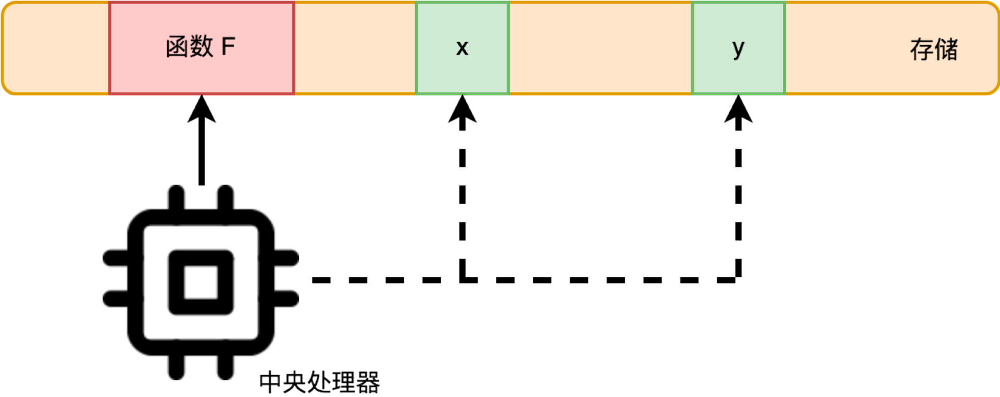
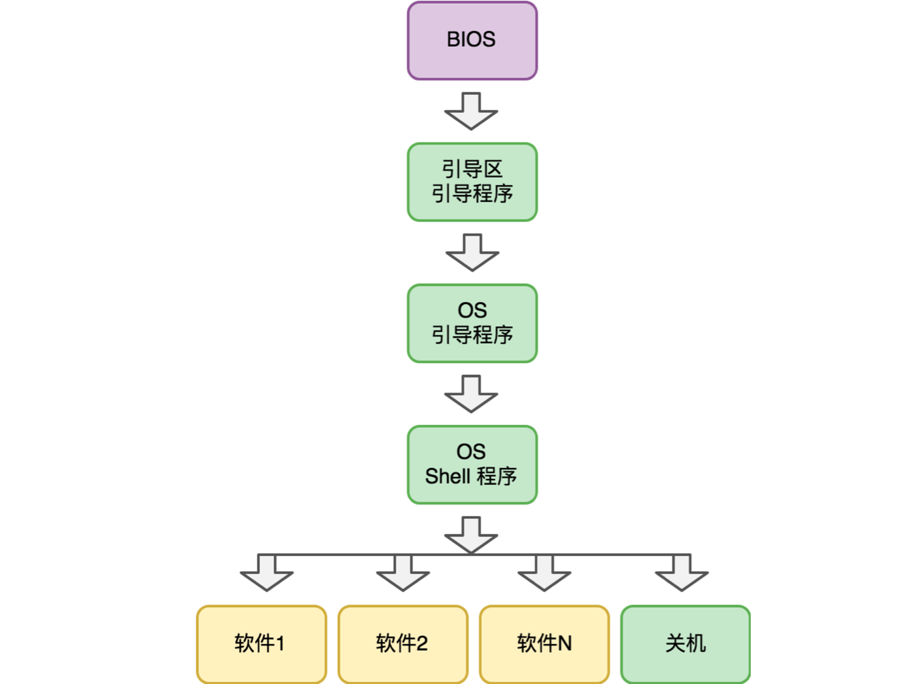
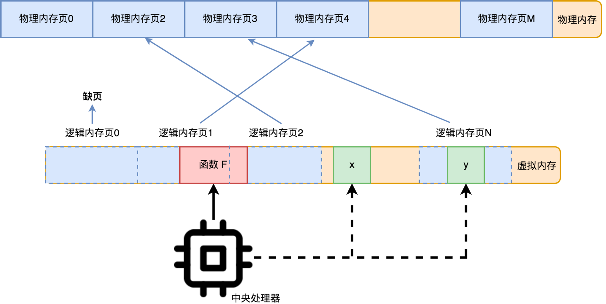

- 00 开篇词 怎样成长为优秀的软件架构师？.md.html
- 01 架构设计的宏观视角.md.html
- 02 大厦基石：无生有，有生万物.md.html
- 03 汇编：编程语言的诞生.md.html
- 04 编程语言的进化.md.html
- 05 思考题解读：如何实现可自我迭代的计算机？.md.html
- 06 操作系统进场.md.html
- 07 软件运行机制及内存管理.md.html
- 08 操作系统内核与编程接口.md.html
- 09 外存管理与文件系统.md.html
- 10 输入和输出设备：交互的演进.md.html
- 11 多任务：进程、线程与协程.md.html
- 12 进程内协同：同步、互斥与通讯.md.html
- 13 进程间的同步互斥、资源共享与通讯.md.html
- 14 IP 网络：连接世界的桥梁.md.html
- 15 可编程的互联网世界.md.html
- 16 安全管理：数字世界的守护.md.html
- 17 架构：需求分析 (上).md.html
- 18 架构：需求分析 (下) · 实战案例.md.html
- 19 基础平台篇：回顾与总结.md.html
- 20 桌面开发的宏观视角.md.html
- 21 图形界面程序的框架.md.html
- 22 桌面程序的架构建议.md.html
- 23 Web开发：浏览器、小程序与PWA.md.html
- 24 跨平台与 Web 开发的建议.md.html
- 25 桌面开发的未来.md.html
- 26 实战（一）：怎么设计一个“画图”程序？.md.html
- 27 实战（二）：怎么设计一个“画图”程序？.md.html
- 28 实战（三）：怎么设计一个“画图”程序？.md.html
- 29 实战（四）：怎么设计一个“画图”程序？.md.html
- 30 实战（五）：怎么设计一个“画图”程序？.md.html
- 31 辅助界面元素的架构设计.md.html
- 32 架构：系统的概要设计.md.html
- 33 桌面开发篇：回顾与总结.md.html
- 34 服务端开发的宏观视角.md.html
- 35 流量调度与负载均衡.md.html
- 36 业务状态与存储中间件.md.html
- 37 键值存储与数据库.md.html
- 38 文件系统与对象存储.md.html
- 39 存储与缓存.md.html
- 40 服务端的业务架构建议.md.html
- 41 实战（一）：“画图”程序后端实战.md.html
- 42 实战（二）：“画图”程序后端实战.md.html
- 43 实战（三）：“画图”程序后端实战.md.html
- 44 实战（四）：“画图”程序后端实战.md.html
- 45 架构：怎么做详细设计？.md.html
- 46 服务端开发篇：回顾与总结.md.html
- 47 服务治理的宏观视角.md.html
- 48 事务与工程：什么是工程师思维？.md.html
- 49 发布、升级与版本管理.md.html
- 50 日志、监控与报警.md.html
- 51 故障域与故障预案.md.html
- 52 故障排查与根因分析.md.html
- 53 过载保护与容量规划.md.html
- 54 业务的可支持性与持续运营.md.html
- 55 云计算、容器革命与服务端的未来.md.html
- 56 服务治理篇：回顾与总结.md.html
- 57 心性：架构师的修炼之道.md.html
- 58 如何判断架构设计的优劣？.md.html
- 59 少谈点框架，多谈点业务.md.html
- 60 架构分解：边界，不断重新审视边界.md.html
- 61 全局性功能的架构设计.md.html
- 62 重新认识开闭原则 (OCP).md.html
- 63 接口设计的准则.md.html
- 64 不断完善的架构范式.md.html
- 65 架构范式：文本处理.md.html
- 66 架构老化与重构.md.html
- 67 架构思维篇：回顾与总结.md.html
- 68 软件工程的宏观视角.md.html
- 69 团队的共识管理.md.html
- 70 怎么写设计文档？.md.html
- 71 如何阅读别人的代码？.md.html
- 72 发布单元与版本管理.md.html
- 73 软件质量管理：单元测试、持续构建与发布.md.html
- 74 开源、云服务与外包管理.md.html
- 75 软件版本迭代的规划.md.html
- 76 软件工程的未来.md.html
- 77 软件工程篇：回顾与总结.md.html
- 加餐 如何做HTTP服务的测试？.md.html
- 加餐 实战：“画图程序” 的整体架构.md.html
- 加餐 怎么保障发布的效率与质量？.md.html
- 热点观察 我看Facebook发币（上）：区块链、比特币与Libra币.md.html
- 热点观察 我看Facebook发币（下）：深入浅出理解 Libra 币.md.html
- 用户故事 站在更高的视角看架构.md.html
- 答疑解惑 想当架构师，我需要成为“全才”吗？.md.html
- 结束语 放下技术人的身段，用极限思维提升架构能力.md.html
- 课外阅读 从《孙子兵法》看底层的自然法则.md.html
- 捐赠
07 软件运行机制及内存管理
你好，我是七牛云许式伟。
操作系统的核心职能是软件治理，而软件治理的一个很重要的部分，就是让多个软件可以共同合理使用计算机的资源，不至于出现争抢的局面。
内存作为计算机最基础的硬件资源，有着非常特殊的位置。我们知道，CPU 可以直接访问的存储资源非常少，只有：寄存器、内存（RAM）、主板上的 ROM。
寄存器的访问速度非常非常快，但是数量很少，大部分程序员不直接打交道，而是由编程语言的编译器根据需要自动选择寄存器来优化程序的运行性能。
主板上的 ROM 是非易失的只读的存储。所谓非易失，是计算机重新启动后它里面的数据仍然会存在。这不像内存（RAM），计算机重新启动后它上面的数据就丢失了。ROM 非易失和只读的特点，决定了它非常适合存储计算机的启动程序（BIOS）。
所以你可以看到，内存的地位非常特殊，它是唯一的 CPU 内置支持，且和程序员直接会打交道的基础资源。
内存有什么用？前面我们在 “[02 | 大厦基石：无生有，有生万物]” 一讲中介绍冯·诺依曼结构的时候，画过一个图：

从图中可以看出，存储的作用有两个：一个是作为 “计算” 的操作对象，输入和输出数据存放的所在；另一个是存放 “计算” 本身，也就是程序员写的程序。
这里说的存储，主要指的就是内存。
计算机运行全过程
当然，这是从 CPU 角度看到的视图：对于 CPU 来说，“计算” 过程从计算机加电启动，执行 BIOS 程序的第一条指令开始，到最后计算机关机，整个就是一个完整的 “计算” 过程。这个过程有多少个“子的 ‘计算’过程”，它并不关心。
但是从操作系统的视角来看，计算机从开机到关机，整个 “计算” 过程，由很多软件，也就是子 “计算” 过程，共同完成。从时序来说，计算机完整的 “计算” 过程如下：

整个 “计算” 过程的每个子过程都有其明确的考量。
首先，BIOS 程序没有固化在 CPU 中，而是独立放到主板的 ROM 上，是因为不同历史时期的计算机输入输出设备很不一样，有键盘+鼠标+显示器的，有触摸屏的，也有纯语音交互的，外置存储则有软盘，硬盘，闪存，这些变化我们通过调整 BIOS 程序就可以应对，而不需要修改 CPU。
引导区引导程序，则是程序从内置存储（ROM）转到外置存储的边界。引导区引导程序很短，BIOS 只需要把它加载到内存执行就可以，但是这样系统的控制权就很巧妙地转到外置存储了。
引导区引导程序不固化在 BIOS 中，而是写在外置存储的引导区，是为了避免 BIOS 程序需要经常性修改。毕竟 BIOS 还是硬件，而引导区引导程序已经属于软件范畴了，修改起来会方便很多。
OS 引导程序，则是外置存储接手计算机控制权的真正开始。这里 OS 是操作系统（Operating System）的缩写。操作系统从这里开始干活了。这个过程发生了很多很多事情，这里我们先略过。但是最终所有的初始化工作完成后，操作系统会把执行权交给 OS Shell 程序。
OS Shell 程序负责操作系统与用户的交互。最早的时候，计算机的交互界面是字符界面，OS Shell 程序是一个命令行程序。DOS 中叫 command.com，而在 Linux 下则叫 sh 或者 bash 之类。这里的 sh 就是 shell 的缩写。
这个时期启动一个软件的方式就是在 Shell 程序中输入一个命令行，Shell 负责解释命令行理解用户的意图，然后启动相应的软件。到了图形界面时期，在 Shell 中启动软件就变成点点鼠标，或者动动手指（触摸屏）就行了，交互范式简化了很多。
在了解了计算机从开机到关机的整个过程后，你可能很快会发现，这里面有一个很关键的细节没有交代：计算机是如何运行外置存储上的软件的？
这和内存管理有关。
结合内存的作用，我们谈内存管理，只需要谈清楚两个问题：
- 如何分配内存（给运行中的软件，避免它们发生资源争抢）；
- 如何运行外置存储（比如硬盘）上的软件？
在回答这两个问题之前，我们先了解一个背景知识：CPU 的实模式和保护模式。这两个模式 CPU 对内存的操作方式完全不同。在实模式下，CPU 直接通过物理地址访问内存。在保护模式下，CPU 通过一个地址映射表把虚拟的内存地址转为物理的内存地址，然后再去读取数据。
相应的，工作在实模式下的操作系统，我们叫实模式操作系统；工作在保护模式下的操作系统，我们叫保护模式操作系统。
实模式下的内存管理
先看实模式操作系统。
在实模式操作系统下，所有软件包括操作系统本身，都在同一个物理地址空间下。在 CPU 看来，它们是同一个程序。操作系统如何分配内存？至少有两种可行的方法。
其一，把操作系统内存管理相关的函数地址，放到一个大家公认的地方（比如 0x10000 处），每个软件要想申请内存就到这个地方取得内存管理函数并调用它。
其二，把内存管理功能设计为一个中断请求。所谓中断，是 CPU 响应硬件设备事件的一个机制。当某个输入输出设备发生了一件需要 CPU 来处理的事情，它就会触发一个中断。
内存的全局有一个中断向量表，本质上就是在一个大家公认的地方放了一堆函数地址。比如键盘按了一个键，它会触发 9 号中断。在 CPU 收到中断请求时，它会先停下手头的活来响应中断请求（到中断向量表找到第 9 项对应的函数地址并去执行它），完成后再回去干原来的活。
中断机制设计之初本来为响应硬件事件之用，但是 CPU 也提供了指令允许软件触发一个中断，我们把它叫软中断。比如我们约定 77 号中断为内存管理中断，操作系统在初始化时把自己的内存管理函数写到中断向量表的第 77 项。
所以，上面两种方法实质上是同一个方法，只是机制细节有所不同而已。中断机制远不止是函数向量表那么简单。比如中断会有优先级，高优先级中断可以打断低优先级中断，反之则不能。
那么，在实模式下，操作系统如何运行外置存储（比如硬盘）上的软件？
很简单，就是把软件完整从外置存储读入到内存然后执行它。不过，在执行前它干了一件事情，把浮动地址固定下来。为什么会有浮动地址？因为软件还没有加载到内存的时候并不知道自己会在哪里，所以有很多涉及数据的地址、函数的地址都没法固定下来，要在操作系统把它加载到内存时来确定。
整体来说，实模式内存管理的机制是非常容易理解的。因为它毕竟实质上是一个程序被拆分为很多个软件（程序代码片段），实现了程序代码片段的动态加载而已。
保护模式下的内存管理
但实模式有两个问题。
其一是安全性。操作系统以及所有软件都运行在一起，相互之间可以随意修改对方的数据甚至程序指令，这样搞破坏就非常容易。
其二是支持的软件复杂性低，同时可运行的软件数量少。
一方面，软件越复杂，它的程序代码量就越多，需要的存储空间越大，甚至可能出现单个软件的大小超过计算机的可用内存，这时在实模式下就没法执行它。
另一方面，哪怕单个软件可运行，但是一旦我们同时运行的软件多几个，操作系统对内存的需求量就会急剧增加。相比这么多软件加起来的内存需求量，内存的存储空间往往仍然是不足的。
但是为什么平常我们可以毫无顾忌地不断打开新的软件，从来不曾担心过内存会不足呢？
这就是保护模式的作用了。保护模式下，内存访问不再是直接通过物理内存，而是基于虚拟内存。虚拟内存模式下，整个内存空间被分成很多个连续的内存页。每个内存页大小是固定的，比如 64K。
这样，每次 CPU 访问某个虚拟内存地址中的数据，它都会先计算出这是要访问哪个内存页，然后 CPU 再通过一个地址映射表，把虚拟的内存地址转为物理的内存地址，然后到这个物理内存地址去读取数据。地址映射表是一个数组，下标是内存页页号，值是该内存页对应的物理内存首地址。
当然，也有可能某一个内存页对应的物理内存地址还不存在，这种情况叫缺页，没法读取数据，这时 CPU 就会发起一个缺页的中断请求。

这个缺页的中断请求会被操作系统接管。发生缺页时，操作系统会为这个内存页分配物理的内存，并恢复这个内存页的数据。如果没有空闲的物理内存可以分配，它就会选择一个最久没有被访问的内存页进行淘汰。
当然，淘汰前会把这个内存页的数据保存起来，因为下次 CPU 访问这个被淘汰的内存页时一样会发生缺页中断请求，那时操作系统还要去恢复数据。
通过这个虚拟内存的机制，操作系统并不需要一上来就把整个软件装进内存中，而是通过缺页中断按需加载对应的程序代码片段。多个软件同时运行的问题也解决了，内存不够用的时候，就把最久没有用过的内存页淘汰掉，腾出物理内存出来。
运行软件的问题解决了。那么，操作系统如何分配内存给运行中的软件？
其实，内存分配的问题也解决了，并不需要任何额外的机制。反正内存地址空间是虚拟的，操作系统可以一上来就给要运行的软件分配超级大的内存，你想怎么用随你。软件如果不用某个内存页，什么都不发生。软件一旦用了某个内存页，通过缺页中断，操作系统就分配真正的物理内存给它。
通过引入虚拟内存及其缺页机制，CPU 很好地解决了操作系统和软件的配合关系。
每个运行中的软件，我们把它叫进程，都有自己的地址映射表。也就是说，虚拟地址并不是全局的，而是每个进程有一个自己独立的虚拟地址空间。
在保护模式下，计算机的基础架构体系和操作系统共同在努力做的一件事情，就是让每个软件“感觉”自己在独占整个计算机的资源。独立的虚拟地址空间很好地伪装了这一点：看起来我独自在享用所有内存资源。在实模式下的浮动地址的问题也解决了，软件可以假设自己代码加载的绝对地址是什么，不需要在加载的时候重新调整 CPU 指令操作的地址。
这和实模式很不一样。在实模式下，所有进程都在同在物理内存的地址空间里，它们相互可以访问对方的数据，修改甚至破坏对方的数据，进而导致其他进程（包括操作系统本身的进程）崩溃。内存是进程运行的基础资源，保持进程基础资源的独立性，是软件治理的最基础的要求。这也是保护模式之所以叫“保护”模式的原因。
架构思维上我们学到什么？
虚拟内存它本质上要解决这样两个很核心的需求。
其一，软件越来越大，我们需要考虑在外置存储上执行指令，而不是完整加载到内存中。但是外置存储一方面它的数据 CPU 并不知道怎么读；另一方面就算知道怎么读，也不知道它的数据格式是什么样的，这依赖文件系统的设计。让 CPU 理解外置存储的实现细节？这并不是一个好的设计。
其二，要同时运行的软件越来越多，计算机内存的供给与软件运行的内存需求相比，捉襟见肘。怎么才能把有限的内存的使用效率最大化？一个很容易想到的思路是把不经常使用的内存数据交换到外置存储。但是问题仍然是，CPU 并不了解外置存储的实现细节，怎么才能把内存按需交换出去？
通过把虚拟内存地址分页，引入缺页中断，我们非常巧妙地解决了这个问题。缺页中断很像是 CPU 留给操作系统的回调函数，通过它对变化点实现了很好的开放性设计。
结语
总结一下。我们今天先概要地阐述了计算机运行的全过程，并对每一步的核心意义做了简单的介绍。然后我们把话题转到我们这一节的重心：内存管理。
谈内存管理，需要谈清楚两个核心问题：
- 如何分配内存（给运行中的软件，避免它们发生资源争抢）；
- 如何运行外置存储（比如硬盘）上的软件？
我们分别就在实模式下和保护模式下的内存管理进行了讨论。
如果你对今天的内容有什么思考与解读，欢迎给我留言，我们一起讨论。如果你觉得有所收获，也欢迎把文章分享给你的朋友。感谢你的收听，我们下期再见。
© 2019 - 2023 Liangliang Lee. Powered by gin and hexo-theme-book.